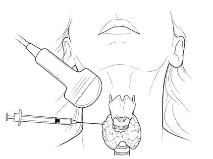

甲狀腺細針穿刺說明與同意書
1檢查說明
- 檢查目的：判斷甲狀腺結節是良性或惡性。
- 檢查方式：在超音波導引下，以 21 或 23 號細針穿刺結節，抽取內容物做細胞學檢查。
- 檢查後注意：穿刺完成後需在診所停留 20 分鐘，以兩指在穿刺處加壓，確認無異樣才離開。
- 可能的併發症：較常見的是加壓不當造成局部出血。

回家後如果穿刺處腫脹或呼吸困難，請立即回診或至急診就醫。
2檢查前請告知醫師
- 服用抗凝血藥物者，檢查前應至少停用 7 天。停藥前請先與醫師確認。
- 有血小板不足、肝硬化、腎功能不佳等容易出血的疾病，請事先告知。
- 請攜帶健保卡；有長期服用的藥物，請帶藥袋或藥單。
3同意書
本人經醫師說明後，已了解甲狀腺穿刺的目的、方式、注意事項與可能的併發症，同意接受此檢查。
此致 木子澄安診所
治療室內設有錄音錄影設備，用於記錄醫療過程並保障雙方權益；設置位置已確保維護您的隱私。